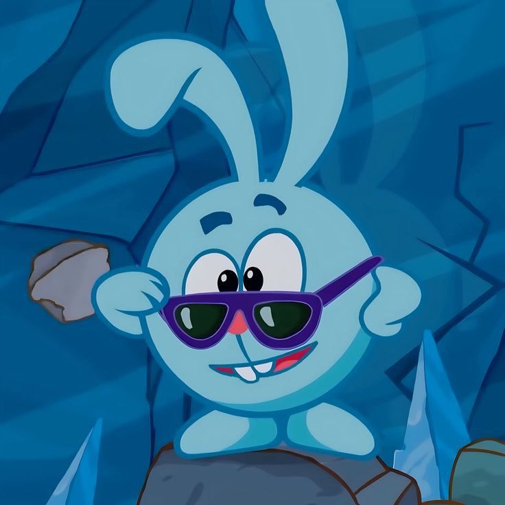
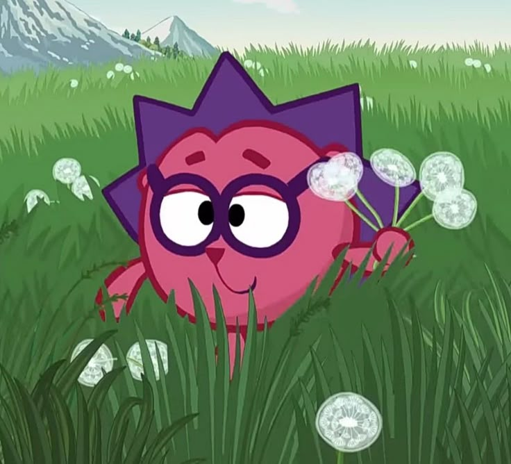
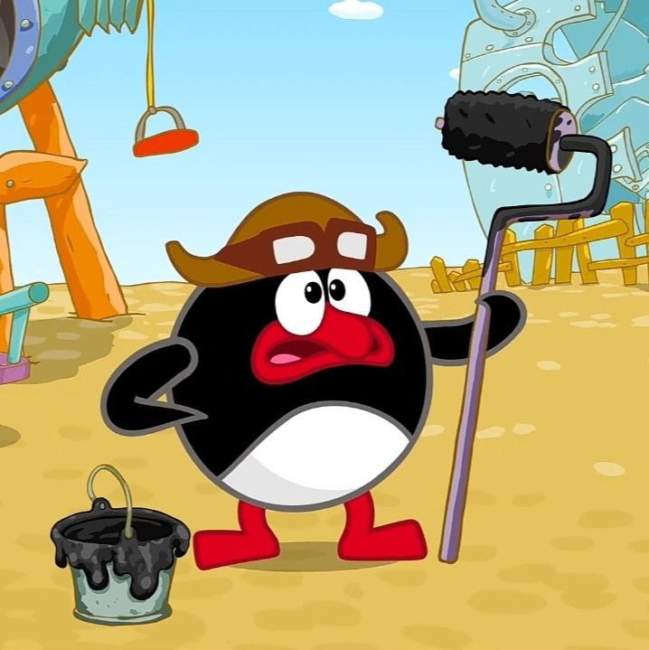
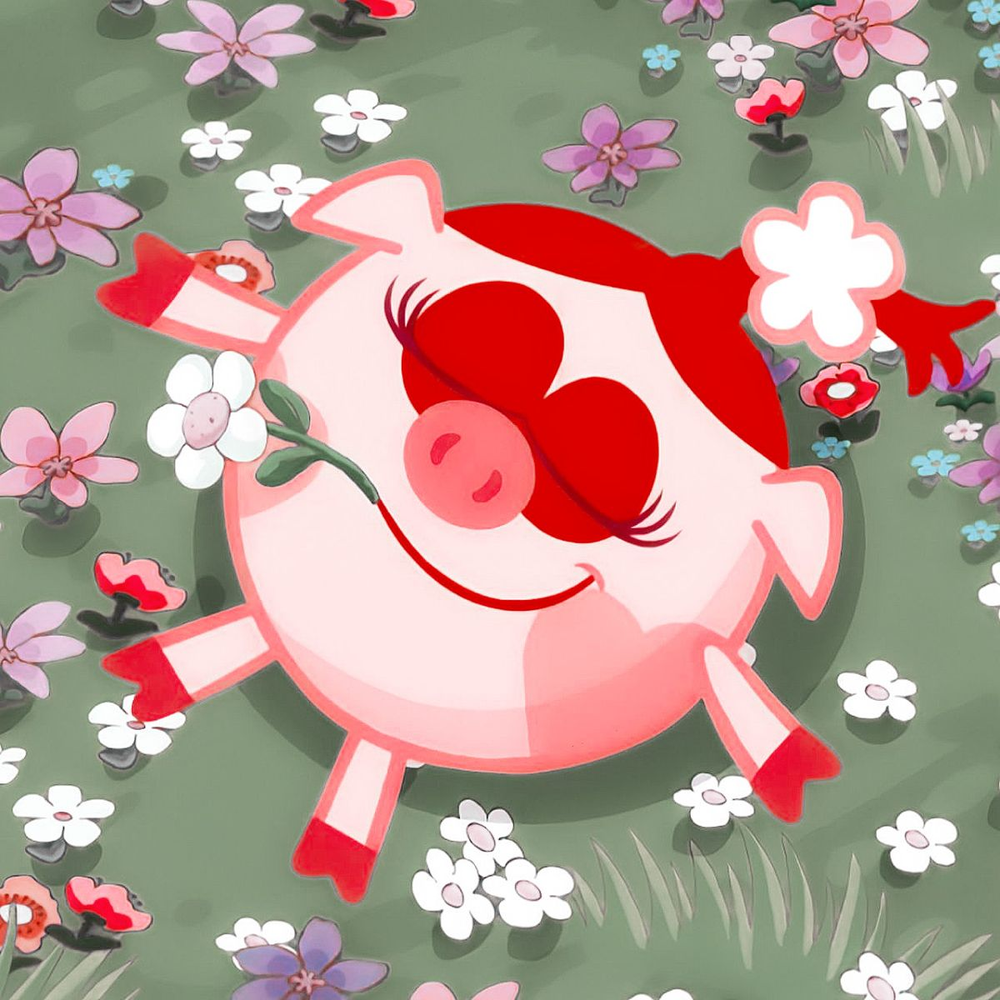
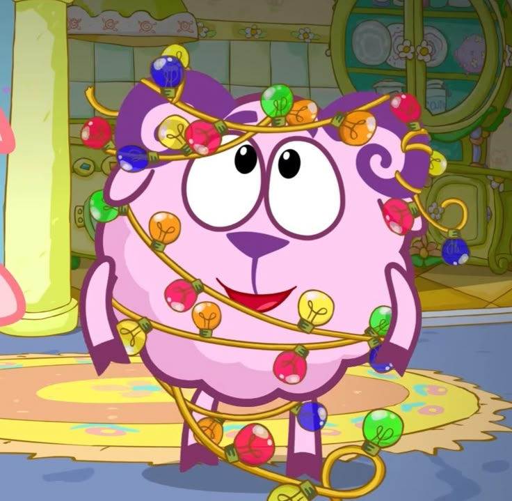
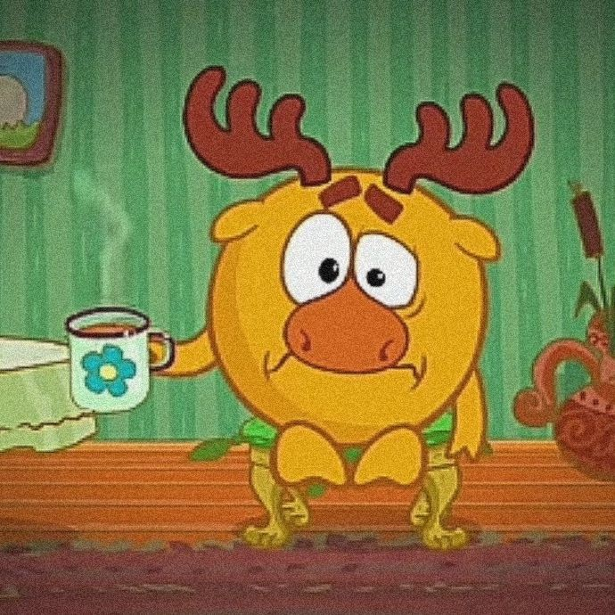
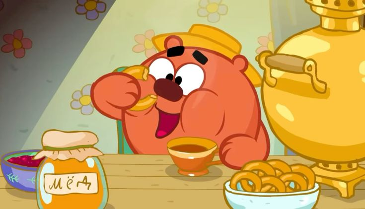
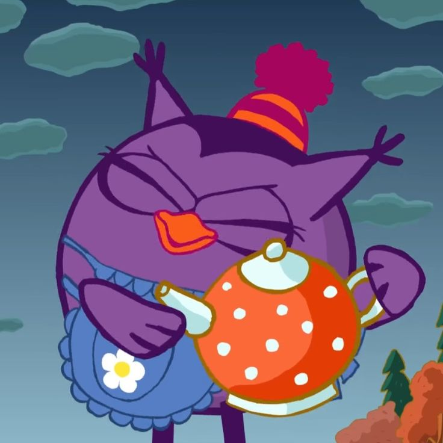
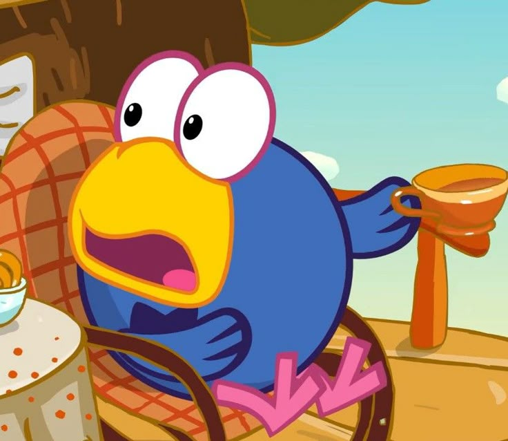

В мультфильме представлено множество ярких персонажей, каждый из которых имеет свою индивидуальность и роль в сюжете. Ниже — подробное описание девяти главных героев.
Популярные герои:
- Крош — Бессменный лидер, энергичный и предприимчивый кролик. Всегда ищет приключения, любит спорт и активный отдых. Его непоседливость часто приводит к забавным ситуациям, но он никогда не бросает друзей в беде.
- Ёжик — Надежный друг Кроша, рассудительный и спокойный. Коллекционирует кактусы и фантики, любит порядок. Часто выступает голосом разума, когда Крош затевает очередную авантюру.
- Пин — Изобретательный пингвин-конструктор, пользующийся большим уважением. Говорит с характерным немецким акцентом. Создал множество механизмов, включая робота Биби и летательные аппараты.
- Нюша — Обаятельная и эмоциональная свинка, популярная среди зрителей. Мечтает стать принцессой, следит за модой, любит зеркала и комплименты. Несмотря на капризность, добрая и заботливая.
- Бараш — Романтичный поэт, склонный к меланхолии. Пишет стихи о любви и грусти, часто вдохновляясь Нюшей. Мечтательный и немного неуверенный в себе, но в нужный момент способен на героические поступки.
- Лосяш — Ученый-лось, привлекающий своей чудаковатостью. Астроном, физик, биолог — его интересы безграничны. Часто проводит эксперименты, которые заканчиваются неожиданно, но всегда познавательно.
- Копатыч — Хозяйственный медведь-садовод. Выращивает овощи и фрукты, держит пасеку. Очень сильный, но добродушный. Любит вкусно поесть и поругать непослушных смешариков.
- Совунья — Мудрая сова-врач. Заботится о здоровье жителей, знает множество народных рецептов. Раньше была учительницей физкультуры, поэтому до сих пор следит за физической формой друзей.
- Кар-Карыч — Артистичный ворон, мудрый наставник. Путешествовал по свету, выступал в цирке, играет на фортепиано. Любит рассказывать истории из своей жизни, иногда приукрашивая. Даёт ценные советы молодым смешарикам.
А ниже вы можете увидеть их изображения (все в одном размере, как мы любим):








